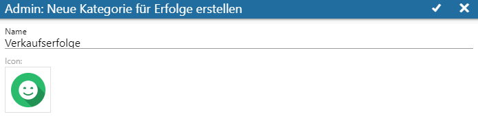
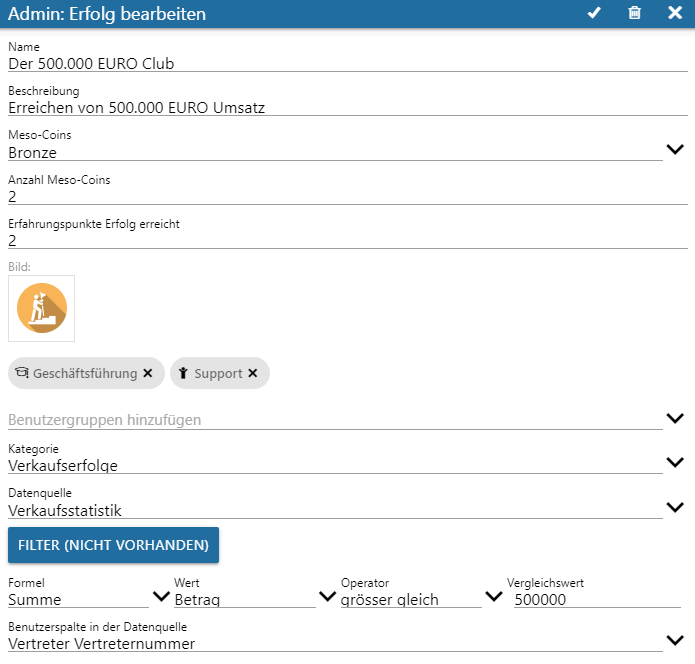
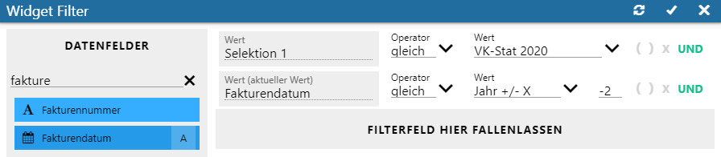
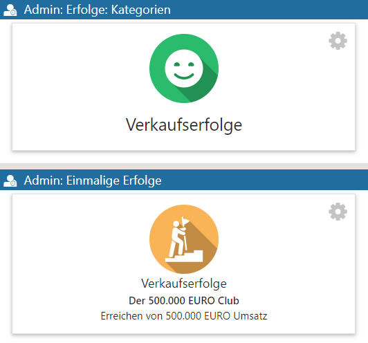
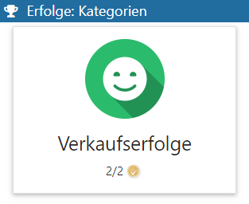
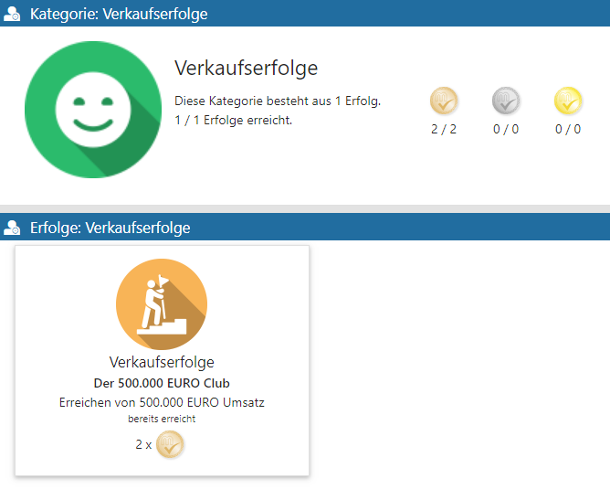
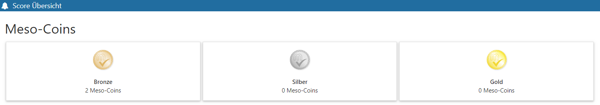
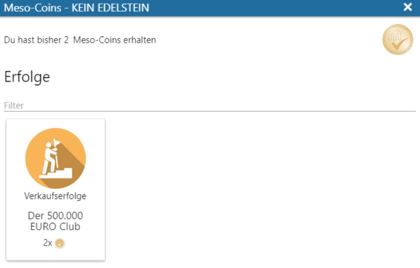
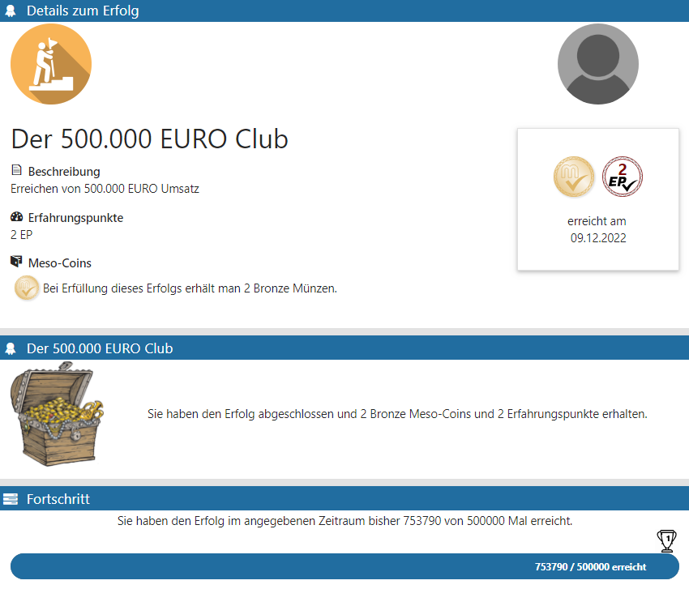

Ein einmaliger Erfolg ist eine Mechanik, die dazu eingesetzt werden kann, das Erreichen von bestimmten Meilensteinen festzuhalten. Ausgehend von einer vorhandenen Datenquelle (Verkaufsstatistik) und den entsprechenden Zuordnungen von Vertretern zu WinLine Benutzern wird die Erfolgsverwaltung über
1 WinLine INFO
1 SMART
1 SCORE
aus dem Menüpunkt
1 Admin
1 Erfolge verwalten
gestartet.
Wird die zugehörige Datenquelle in weiterer Folge aktualisiert, so aktualisieren sich automatisch auch andere damit verknüpfte Elemente.
In der oberen Kopfleiste "Admin: Erfolge: Kategorien" wird über das "+"-Icon zunächst eine neue Kategorie eingerichtet (wird dabei mit Namen und Icon versehen) und über das "Check-Icon" erstellt.

Aus der darunter liegenden Kopfleiste "Admin: Neuen einmaligen Erfolg erstellen" wird ebenso über das "+"-Icon ein Fenster geöffnet, über welches die Definition des Erfolgs erstellt werden kann.

Ø Name und Beschreibung
Hier vergebene Namen und Beschreibungen stellen den Erfolg nach außen dar und sollten eindeutig und bezugnehmend vergeben werden.
Ø Meso-Coins
Es folgt eine Selektion der Meso-Coin-Sorte. Dabei kann aus den folgend aufgeführten Arten gewählt werden:
ü Bronze
ü Silber
ü Gold
Ø Anzahl Meso-Coins
Hier wird die Anzahl der Münzen definiert, die dem WinLine Benutzer beim Erreichen des Erfolgs gutgeschrieben werden.
Ø Erfahrungspunkte Erfolg erreicht
Die eingetragenen Erfahrungspunkte für den erreichten Erfolg werden dem Benutzer gutgeschrieben und werden zur SCORE-Elementübergreifenden Gesamtpunktzahl hinzuaddiert. Sofern im Admin-Menü "Level" definiert wurden, wirken sich diese Punkte entsprechend auf das Level des Benutzers aus.
Ø Bild
Ermöglicht die Auswahl eines Icons, mit dem die Rangliste zukünftig abgebildet werden soll.
Ø Benutzergruppen hinzufügen
Bei einmaligen Erfolgen werden Benutzergruppen zugewiesen.
Ø Kategorie
Hier wird aus vorhandenen Kategorien diejenige gewählt, die zutreffend ist.
Ø Datenquelle
Die als Basis dienende Datenquelle wird selektiert.
Ø Button "Filter (Nicht vorhanden)"
Sollen innerhalb der Datenquelle weitere Einschränkungen geltend gemacht werden, so besteht über die Filterdefinition diese Option, sodass aus dem Bereich "Datenfelder" via Drag and Drop "Dimensionen" bzw. "Werte" in den Bereich "Filterfeld hier fallen lassen" gezogen und fallengelassen werden können.
Hinweis
Die gezeigten Filtereinstellungen sind für das Beispiel dieses Erfolgs nicht notwendig, sollen jedoch exemplarisch das Selektieren eines spezifischen Snapshots mit einer UND-Verknüpfung eines weiteren Feldes aufzeigen.

Über das Check-Icon in der Kopfleiste wird ein optionaler Filter gespeichert.
Definition der Regel eines Erfolgs
In den folgenden Feldern wird festgelegt, wie die Regel die Punkte berechnen soll.
Ø Formel
Hier wird die Formel eingetragen, die für die Erfolgsregel herangezogen werden soll.
Ø Wert
Hier wird Wert der Datenquelle ausgewählt, auf deren Basis die Punkte berechnet werden sollen.
Ø Operator
Der Vergleichsoperator, der für die Erfolgsregel verwendet werden soll, wird hier eingetragen.
Ø Vergleichswert
Der Wert, mit dem die Werte über den Vergleichsoperator verglichen werden sollen, wird hier eingetragen.
Nach dem Bestätigen werden sowohl die angelegte Kategorie, als auch der einmalige Erfolg in der Admin Übersicht in "Erfolge verwalten" angezeigt. Beide Kacheln können durch Klicken geöffnet und bearbeitet werden.

Hinweis
Der neue Erfolg soll das Erreichen der 500.000 € Umsatz-Marke festhalten. Bei einmaligen Erfolgen werden Benutzergruppen zugewiesen, weshalb die Gruppen aller involvierten Teilnehmer selektiert werden müssen.
Meso-Coins für einmalige Erfolge
Meso-Coins sind Münzen, welche in den drei Arten/Farben
ü Gold
ü Silber
ü Bronze
zur Verfügung stehen.
Sie können über das Erreichen von einmaligen Erfolgen gewonnen werden. In deren Definitionen kann bestimmt werden, wie viele Münzen dieser Erfolg bringen soll. Hierbei kann immer nur eine Münzfarbe und eine positive ganze Zahl ausgewählt werden.
Beispiele
Das Erreichen eines Erfolgs kann also beispielsweise nur "5. Goldmünzen" oder "1. Silbermünze" einbringen, nicht aber beides.
Werden für einen Erfolg "0" Münzen vergeben, so wird die Münzfarbe ignoriert.
Darstellung der einmaligen Erfolge
Folgende Abbildungen zeigen die Erfolgs-Ergebnisse aus dem Beispiel.
Ø SCORE Übersicht des teilnehmenden Benutzers
In der SCORE Übersicht des Benutzers stehen die aktiven definierten Erfolge im Bereich "Erfolge: Kategorien" zur Verfügung. Zudem werden zusammenhängend vergebene Meso-Coins mit aufgeführt.

Durch das Selektieren der Kategorie-Kachel öffnet sich einer erweiterte Erfolgs-Ansicht, in welcher detailliert aktuelle Status der Erfolge aufgeführt werden, welcher dieser Kategorie angehören (inklusive der verdienten Meso-Coins).

Auch wenn direkt die Kachel mit dem Münzen-Wert in der SCORE Übersicht selektiert wird, erhält der Benutzer Informationen darüber, wo er diese gewonnen hat.


Ø Details zum selektierten Erfolg
Wird innerhalb der Kategorie eine Erfolgs-Kachel angeklickt, dann öffnet sich das Fenster "Details zum Erfolg", aus welchem weitere erfolgsspezifische Angaben zu entnehmen sind.
